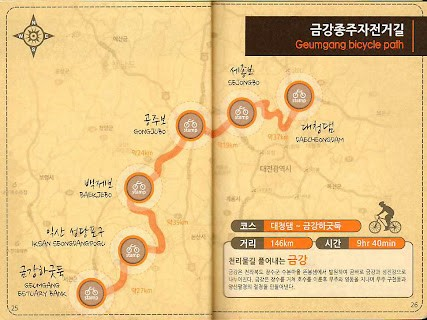

| 코스명 | 금강 자전거길 |
| 코 스 | 대청댐인증센터~세종보인증센터~공주보인증센터~백제보인증센터~익산성당포구인증센터~금강하구둑인증센터 |
| 거 리 | 146km |
| 시 간 | 9시간 40분 |

이번 금강 자전거길은 서울에서 장거리에 위치해 있어 올라오는 버스편을 고려하여 군산에서 시작하여 지난번 오천길에서 대청댐 인증을 완료하여
세종보인증센터를 마지막으로 인증하고 세종시외고속터미널에서 버스를 타고 귀가하는 코스를 잡았습니다.
금강을 거슬러 올라오는 코스로 꾸준한 상승구간과 간간히 업힐 구간이 있어 생각보다 많이 힘든 라이딩이었습니다. 아마 세종에서 군산으로 라이딩 하였으면
조금은 더 쉽지 않았을까 생각됩니다. (혹시 같은 코스를 간다면 세종보 쪽에서 군산쪽으로 라이딩을 하는 것이 좋을 듯 합니다.)
대체적으로 자전거길은 잘 형성되어 있으며 강바람을 맞으면서 시원하게 라이딩을 하였으며, 꾸준한 오르막길이고 업힐이 간간히 있어 초반에 오버페이스를 하여
많이 힘든 라이딩이었지만 친구들과 함께 하며 당겨주고 밀어주어 힘들지만 보람찬 라이딩이었습니다.